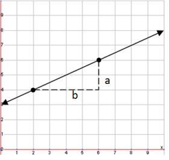
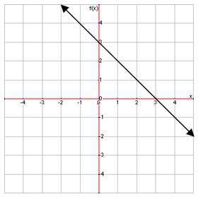
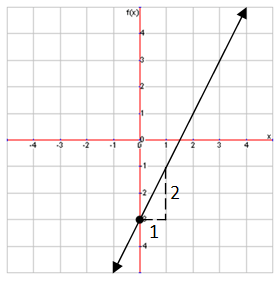
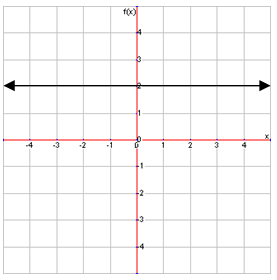
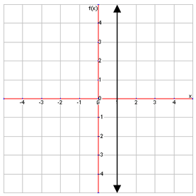
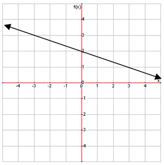

Calulating Slopes
The slope of a line measures the steepness of the line and in which direction it angles. It can be calculated by comparing how many units upward the line moves for a certain number of units to the left of right, shown by this formula:
Here, we have picked \((2,4)\) and \((6,6)\) to be our points to draw a triangle with. Side a of this triangle is the rise: to go from \((2,4)\) to \((6,6)\), you must go up 2 units. Side b of the triangle is the run: to go from \((2,4)\) to \((6,6)\), you also have to go 4 units to the left. So, using our formula, we can calculate the slope as:
\[m=\frac{2}{4}=\frac{1}{2}\]
Using this triangle is just a visual way of counting the units we move up or down and left or right from one point to another. You do not need to draw out the triangle, just counting the units is fine.
Slopes do not always have to be positive. Look at the graph below and calculate its slope:

When looking at graphs, it is important to remember that movement up or to the right is positive, while movement down or to the left is negative. So, when we calculate our slope, we can see that moving from one point to any other point will result in either the rise or the run being negative. Moving right (positive) along the line means that we also move down (negative), while moving left (negative) means that we also move up (positive) the line. So, using our formula, the slope is:
\[m=-\frac{1}{1}=-1\]
Sometimes you will be given two point and told to find the slope without being given a line. Now, you could draw out the line and count out the slope, or you could just use this formula:
\[m=\frac{y_1-y_2}{x_1-x_2}\]
This looks very similar to the rise/run formula because it essentially is. The difference of the two y-values is that same as counting the units upward in our triangle (rise), and the difference of the two x-values is the same as counting the units sideways (run). Again, it does not matter which point you choose as \((x_1, y_1)\) and which one as \((x_2, y_2)\).
Using the Slope-Intercept Form
Now that we know how to find the slope, we can learn how to graph using the slope-intercept form. Let’s try graphing the following equation:
\[y=2x-3\]
First, we make sure that the equation is in slope-intercept form. This one is, so our next step is to pick a point to start drawing our line from. In slope-intercept form, the point we will always use is the y-intercept. In this case, b is -3, which means that the y-intercept is \((0,-3)\), because the x-coordinate of the y-intercept is always 0, and b value is the y-coordinate. So, we start drawing our line at \((0,-3)\). To figure out how to draw our line, we use the slope. We can see that \(m=2\) here, so for every 2 units up the line moves, it also moves 1 unit to the right. Using this information, we can graph the line like so:

As you can see above, the line extends 2 units up for every one unit right. You may wish to plot another point and connect them to draw the line if you are not sure of your graph, but it is not necessary.
More on Horizonal and Vertical Lines
There are two special cases of slopes that apply to horizontal and vertical lines. Try finding the slope of the following horizontal line:
If you try to use rise/run to find thing the slope, you will find that the slope is 0 (0 divided by anything is always 0). This is because the line never rises; it does not go up or down. So, the slope of any line that is horizontal is zero.
Now look at this vertical line:

If you try to find the slope of this line, you will find that you will have to divide by 0 (Remember: dividing a number by 0 is not allowed!). Because we can’t actually calculate this slope, we call it undefined, seeing as we can’t define it. Every vertical line has an undefined slope.
Now that we know how to graph lines using slope-intercept form, we can also do the reverse: writing an equation for a line on a graph. Try writing the equation for the following graph:

Remember that the equation is going to take this form:
\[y=mx+b\]
We can already see that the y-intercept is \((0,2)\), so our b value is 2. Now we just need to calculate the slope. Using our formula \(\frac{\text{rise}}{\text{run}}\) or \(\frac{y_1-y_2}{x_1-x_2}\), we can see that the slope is -\(\frac{1}{3}\). So we replace m, the slope, with that. Now we have an equation for our line:
\[y=-\frac{1}{3} x+2\]